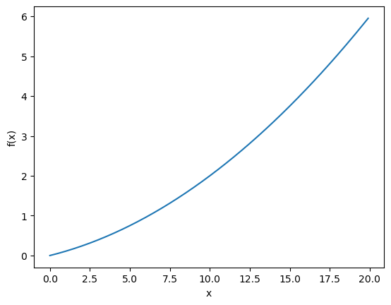
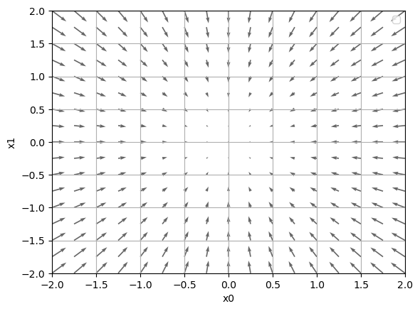
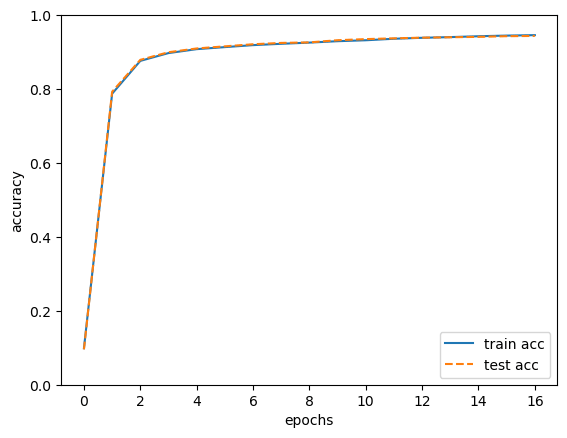

正文
4.1 从数据中学习
4.1.1 数据驱动
深度学习有时也称为端到端机器学习（end-to-end machine learning）。这里所说的端到端是指从一端到另一端的意思，也就是从原始数据（输入）中获得目标结果（输出）的意思。
4.1.2 训练数据和测试数据
机器学习中，一般将数据分为训练数据(也可称为监督数据)和测试数据两部分来进行学习和实验等。
-
首先，使用训练数据进行学习，寻找最优的参数
-
然后，使用测试数据评价训练得到的模型的实际能力
4.2 损失函数
神经网络的学习中所用的指标称为损失函数（loss function）。这个损失函数可以使用任意函数，但一般用均方误差和交叉熵误差等。
4.2.1 均方误差
表示神经网络的输出， 表示监督数据， 表示数据的维数。
def mean_squared_error(y, t):
return 0.5 * np.sum((y - t) ** 2)# 设“2”为正确解
t = [0, 0, 1, 0, 0, 0, 0, 0, 0, 0]# 例 1：“2”的概率最高的情况（0.6）
y = [0.1, 0.05, 0.6, 0.0, 0.05, 0.1, 0.0, 0.1, 0.0, 0.0]
mean_squared_error(np.array(y), np.array(t))0.09750000000000003
# 例 2：“7”的概率最高的情况（0.6）
y = [0.1, 0.05, 0.1, 0.0, 0.05, 0.1, 0.0, 0.6, 0.0, 0.0]
mean_squared_error(np.array(y), np.array(t))0.5975
均方误差显示第一个例子的输出结果与监督数据更加吻合。
4.2.2 交叉熵误差
def cross_entropy_error(y, t):
"""
参数 y 和 t 是 NumPy 数组。函数内部在计算 np.log 时，加上了一
个微小值 delta。这是因为，当出现 np.log(0)时，np.log(0)会变为负无限大
的-inf，这样一来就会导致后续计算无法进行。作为保护性对策，添加一个
微小值可以防止负无限大的发生。
"""
delta = 1e-7
return -np.sum(t * np.log(y + delta))t = [0, 0, 1, 0, 0, 0, 0, 0, 0, 0]
y = [0.1, 0.05, 0.6, 0.0, 0.05, 0.1, 0.0, 0.1, 0.0, 0.0]
cross_entropy_error(np.array(y), np.array(t))0.510825457099338
y = [0.1, 0.05, 0.1, 0.0, 0.05, 0.1, 0.0, 0.6, 0.0, 0.0]
cross_entropy_error(np.array(y), np.array(t))2.302584092994546
4.2.3mini-batch 学习
-
假设数据有 个
-
表示第 个数据的第 个元素的值 -（ 是神经网络的输出， 是监督数据）。
从全部数据中选出一部分，作为全部数据的“近似”。神经网络的学习也是从训练数据中选出一批数据（称为 mini-batch, 小批量），然后对每个 mini-batch 进行学习。这种学习方式称为 mini-batch 学习。
import sys, os
sys.path.append(os.pardir)
import numpy as np
from dataset.mnist import load_mnist
# 通过设定参数 one_hot_label=True，
# 可以得到 one-hot 表示（即仅正确解标签为 1，其余为 0 的数据结构）。
(x_train, t_train), (x_test, t_test) = \
load_mnist(normalize=True, one_hot_label=True)
print(x_train.shape) # (60000, 784) 训练数据有 60000 个，输入数据是 784 维（28 × 28）的图像数据
print(t_train.shape) # (60000, 10) 监督数据是 10 维的数据(60000, 784)
(60000, 10)
从这个训练数据中随机抽取 10 笔数据。
train_size = x_train.shape[0]
batch_size = 10
batch_mask = np.random.choice(train_size, batch_size)
x_batch = x_train[batch_mask]
t_batch = t_train[batch_mask]使用 np.random.choice() 可以从指定的数字中随机选择想要的数字。
比如，np.random.choice(60000, 10) 会从 0 到 59999 之间随机选择 10 个数字
np.random.choice(60000, 10)array([30142, 18947, 8349, 38135, 8519, 25729, 36061, 11248, 12602,
31498])
4.2.4mini-batch 版交叉熵误差的实现
监督数据 是独热编码的形式时：
def cross_entropy_error(y, t):
if y.ndim == 1:
# y 的维度为 1 时，即求单个数据的交叉熵误差时，需要改变数据的形状
t = t.reshape(1, t.size)
y = y.reshape(1, y.size)
batch_size = y.shape[0]
# 当输入为 mini-batch 时，要用 batch 的个数进行正规化，计算单个数据的平均交叉熵误差
return -np.sum(t * np.log(y + 1e-7)) / batch_size当监督数据是标签形式（非 one-hot 表示，而是像“2”“7”这样的标签）时：
def cross_entropy_error(y, t):
if y.ndim == 1:
t = t.reshape(1, t.size)
y = y.reshape(1, y.size)
batch_size = y.shape[0]
# y[np.arange(batch_size), t]能抽出各个数据的正确解标签对应的神经网络的输出
return -np.sum(np.log(y[np.arange(batch_size), t] + 1e-7)) / batch_size4.2.5 为何要设定损失函数
在进行神经网络的学习时，不能将识别精度作为指标。因为如果以识别精度为指标，则参数的导数在绝大多数地方都会变为 0（识别精度是离散的，对微小的参数变化基本上没有什么反应，即便有反应，它的值也是不连续地、突然地变化）。
4.3 数值微分
4.3.1 导数
导数定义式：
不好的实现示例：
def numerical_diff(f, x):
h = 10e-50
return (f(x+h) - f(x)) / h-
的值太小，会产生舍入误差
-
(x + h) 和 x 之间的差分称为前向差分，为了减小误差，可以改成中心差分
def numerical_diff(f, x):
h = 1e-4 # 0.0001
return (f(x + h) - f(x - h)) / (2 * h)4.3.2 数值微分的例子
对 求微分：
def function_1(x):
return 0.01 * x ** 2 + 0.1 * ximport numpy as np
import matplotlib.pylab as plt
x = np.arange(0.0, 20.0, 0.1) # 以 0.1 为单位，从 0 到 20 的数组 x
y = function_1(x)
plt.xlabel("x")
plt.ylabel("f(x)")
plt.plot(x, y)
plt.show(){kind=link}

numerical_diff(function_1, 5)0.1999999999990898
numerical_diff(function_1, 10)0.2999999999986347
4.3.3 偏导数
对于函数 ：
def function_2(x):
return x[0] ** 2 + x[1] ** 2 # 或者 return np.sum(x ** 2)当 时，关于 的偏导数 ：
def function_tmp1(x0):
return x0*x0 + 4.0**2.0
numerical_diff(function_tmp1, 3.0)6.00000000000378
当 时，关于 的偏导数 ：
def function_tmp2(x1):
return 3.0 ** 2.0 + x1 * x1
numerical_diff(function_tmp2, 4.0)7.999999999999119
4.4 梯度
像 这样的由全部变量的偏导数汇总而成的向量称为梯度（gradient）。
def numerical_gradient(f, x):
h = 1e-4 # 0.0001
grad = np.zeros_like(x) # 生成和 x 形状相同的数组
for idx in range(x.size):
tmp_val = x[idx]
# f(x+h)的计算
x[idx] = tmp_val + h
fxh1 = f(x)
# f(x-h)的计算
x[idx] = tmp_val - h
fxh2 = f(x)
grad[idx] = (fxh1 - fxh2) / (2 * h)
x[idx] = tmp_val # 还原值
return grad求点 、、 处的梯度：
numerical_gradient(function_2, np.array([3.0, 4.0]))array([6., 8.])
numerical_gradient(function_2, np.array([0.0, 2.0]))array([0., 4.])
numerical_gradient(function_2, np.array([3.0, 0.0]))array([6., 0.])
No artists with labels found to put in legend. Note that artists whose label start with an underscore are ignored when legend() is called with no argument.
{kind=link}

梯度会指向各点处的函数值降低的方向。更严格地讲，梯度指示的方向是各点处的函数值减小最多的方向。
4.4.1 梯度法
通过巧妙地使用梯度来寻找函数最小值（或者尽可能小的值）的方法就是梯度法。
函数的极小值、最小值以及被称为**鞍点（saddle point）**的地方，梯度为 0。
根据目的是寻找最小值还是最大值，梯度法的叫法有所不同。
-
寻找最小值的梯度法称为梯度下降法（gradient descent method）
-
寻找最大值的梯度法称为梯度上升法（gradient ascent method）
一般来说，神经网络（深度学习）中，梯度法主要是指梯度下降法。
表示更新量，在神经网络的学习中，称为学习率（learning rate）。学习率决定在一次学习中，应该学习多少，以及在多大程度上更新参数。
def gradient_descent(f, init_x, lr=0.01, step_num=100):
"""
参数 f 是要进行最优化的函数
init_x 是初始值
lr 是学习率 learning rate
step_num 是梯度法的重复次数
numerical_gradient(f,x) 会求函数的梯度，用该梯度乘以学习率得到的值进行更新操作，由 step_num 指定重复的次数
"""
x = init_x
for i in range(step_num):
grad = numerical_gradient(f, x)
x -= lr * grad
return x请用梯度法求 的最小值：
def function_2(x):
return x[0] ** 2 + x[1] ** 2init_x = np.array([-3.0, 4.0])
gradient_descent(function_2, init_x=init_x, lr=0.1, step_num=100)array([-6.11110793e-10, 8.14814391e-10])
学习率过大，会发散成一个很大的值：
# 学习率过大的例子：lr=10.0
init_x = np.array([-3.0, 4.0])
gradient_descent(function_2, init_x=init_x, lr=10.0, step_num=100)array([-2.58983747e+13, -1.29524862e+12])
学习率过小，基本没怎么更新就结束了：
# 学习率过小的例子：lr=1e-10
init_x = np.array([-3.0, 4.0])
gradient_descent(function_2, init_x=init_x, lr=1e-10, step_num=100)array([-2.99999994, 3.99999992])
像学习率这样的参数称为超参数。这是一种和神经网络的参数（权重和偏置）性质不同的参数。相对于神经网络的权重参数是通过训练数据和学习算法自动获得的，学习率这样的超参数则是人工设定的。
4.4.2 神经网络的梯度
有一个只有一个形状为 的权重 的神经网络，损失函数用 表示。此时，梯度可以用 表示。
以一个简单的神经网络为例，来实现求梯度：
import sys, os
sys.path.append(os.pardir)
import numpy as np
from common.functions import softmax, cross_entropy_error
from common.gradient import numerical_gradient
class simpleNet:
def __init__(self):
# 用高斯分布进行初始化 randn 函数返回一个或一组样本，具有标准正态分布，大小为 2x3
self.W = np.random.randn(2, 3)
def predict(self, x):
return np.dot(x, self.W)
def loss(self, x, t):
z = self.predict(x)
y = softmax(z)
loss = cross_entropy_error(y, t)
return lossnet = simpleNet()
print(net.W) # 权重参数[[ 0.10279342 0.41541928 -0.05036625]
[-1.08414222 0.75288578 0.93188472]]
x = np.array([0.6, 0.9])
p = net.predict(x)
print(p)[-0.91405194 0.92684877 0.8084765 ]
np.argmax(p) # 最大值的索引1
t = np.array([0, 0, 1]) # 正确的解的标签
net.loss(x, t)0.834766753254781
def f(W):
"""
这里定义的函数 f(W)的参数 W 是一个伪参数。
因为 numerical_gradient(f, x)会在内部执行 f(x), 为了与之兼容而定义了 f(W)
"""
return net.loss(x, t)或用 lambda 表示法：
f = lambda w: net.loss(x, t)dW = numerical_gradient(f, net.W)
print(dW)[[ 0.04650845 0.29310612 -0.33961457]
[ 0.06976267 0.43965918 -0.50942185]]
4.5 学习算法的实现
-
前提
- 神经网络存在合适的权重和偏置，调整权重和偏置以便拟合训练数据的过程称为“学习”。神经网络的学习分成下面 4 个步骤。
-
步骤 1（mini-batch）
- 从训练数据中随机选出一部分数据，这部分数据称为 mini-batch。我们的目标是减小 mini-batch 的损失函数的值。
-
步骤 2（计算梯度）
- 为了减小 mini-batch 的损失函数的值，需要求出各个权重参数的梯度。梯度表示损失函数的值减小最多的方向。
-
步骤 3（更新参数）
- 将权重参数沿梯度方向进行微小更新。
-
步骤 4（重复）
- 重复步骤 1、步骤 2、步骤 3。
因为这里使用的数据是随机选择的 mini batch 数据，所以又称为随机梯度下降法（stochastic gradient descent）。“随机”指的是“随机选择的”的意思，因此，随机梯度下降法是“对随机选择的数据进行的梯度下降法”。深度学习的很多框架中，随机梯度下降法一般由一个名为 SGD 的函数来实现。
4.5.1 2 层神经网络的类
import sys, os
sys.path.append(os.pardir)
from common.functions import *
from common.gradient import numerical_gradient
class TwoLayerNet:
def __init__(self, input_size, hidden_size, output_size, weight_init_std=0.01):
"""
初始化权重
params 保存神经网络的参数的字典型变量（实例变量）。
input_size: 输入层的神经元数
hidden_size: 隐藏层的神经元数
output_size: 输出层的神经元数
"""
self.params = {}
self.params['W1'] = weight_init_std * np.random.randn(input_size, hidden_size)
self.params['b1'] = np.zeros(hidden_size)
self.params['W2'] = weight_init_std * np.random.randn(hidden_size, output_size)
self.params['b2'] = np.zeros(output_size)
def predict(self, x):
"""
进行推理，x 是图像数据
"""
W1, W2 = self.params['W1'], self.params['W2']
b1, b2 = self.params['b1'], self.params['b2']
a1 = np.dot(x, W1) + b1
z1 = sigmoid(a1)
a2 = np.dot(z1, W2) + b2
y = softmax(a2)
return y
# x:输入数据, t:监督数据
def loss(self, x, t):
"""
损失函数：交叉熵损失函数
"""
y = self.predict(x)
return cross_entropy_error(y, t)
def accuracy(self, x, t):
"""
计算识别精度
"""
y = self.predict(x)
y = np.argmax(y, axis=1)
t = np.argmax(t, axis=1)
accuracy = np.sum(y == t) / float(x.shape[0])
return accuracy
# x:输入数据, t:监督数据
def numerical_gradient(self, x, t):
"""
计算权重参数的梯度（数值微分法）
grads 保存梯度的字典型变量（numerical_gradient()方法的返回值）。
"""
loss_W = lambda W: self.loss(x, t)
grads = {}
grads['W1'] = numerical_gradient(loss_W, self.params['W1'])
grads['b1'] = numerical_gradient(loss_W, self.params['b1'])
grads['W2'] = numerical_gradient(loss_W, self.params['W2'])
grads['b2'] = numerical_gradient(loss_W, self.params['b2'])
return grads
def gradient(self, x, t):
"""
计算权重参数的梯度（反向传播法）
grads 保存梯度的字典型变量（numerical_gradient()方法的返回值）。
"""
W1, W2 = self.params['W1'], self.params['W2']
b1, b2 = self.params['b1'], self.params['b2']
grads = {}
batch_num = x.shape[0]
# forward
a1 = np.dot(x, W1) + b1
z1 = sigmoid(a1)
a2 = np.dot(z1, W2) + b2
y = softmax(a2)
# backward
dy = (y - t) / batch_num
grads['W2'] = np.dot(z1.T, dy)
grads['b2'] = np.sum(dy, axis=0)
da1 = np.dot(dy, W2.T)
dz1 = sigmoid_grad(a1) * da1
grads['W1'] = np.dot(x.T, dz1)
grads['b1'] = np.sum(dz1, axis=0)
return gradsnet = TwoLayerNet(input_size=784, hidden_size=100, output_size=10)
print(net.params['W1'].shape) # (784, 100)
print(net.params['b1'].shape) # (100,)
print(net.params['W2'].shape) # (100, 10)
print(net.params['b2'].shape) # (10,)(784, 100)
(100,)
(100, 10)
(10,)
4.5.2mini-batch 的实现
import sys, os
sys.path.append(os.pardir) # 为了导入父目录的文件而进行的设定
import numpy as np
import matplotlib.pyplot as plt
from dataset.mnist import load_mnist
# 读入数据
(x_train, t_train), (x_test, t_test) = load_mnist(normalize=True, one_hot_label=True)
network = TwoLayerNet(input_size=784, hidden_size=50, output_size=10)
iters_num = 10000 # 适当设定循环的次数
train_size = x_train.shape[0]
batch_size = 100 # mini-batch 大小
learning_rate = 0.1 # 学习率
train_loss_list = []
train_acc_list = []
# 平均每个 epoch 的重复次数
test_acc_list = []
iter_per_epoch = max(train_size / batch_size, 1)
for i in range(iters_num):
batch_mask = np.random.choice(train_size, batch_size)
x_batch = x_train[batch_mask]
t_batch = t_train[batch_mask]
# 计算梯度
# grad = network.numerical_gradient(x_batch, t_batch) 数值微分
grad = network.gradient(x_batch, t_batch) # 高速版！反向传播
# 更新参数
for key in ('W1', 'b1', 'W2', 'b2'):
network.params[key] -= learning_rate * grad[key]
loss = network.loss(x_batch, t_batch)
train_loss_list.append(loss)
if i % iter_per_epoch == 0:
# 计算每个 epoch 的识别精度
train_acc = network.accuracy(x_train, t_train)
test_acc = network.accuracy(x_test, t_test)
train_acc_list.append(train_acc)
test_acc_list.append(test_acc)
print("train acc, test acc | " + str(train_acc) + ", " + str(test_acc))
# 绘制图形
markers = {'train': 'o', 'test': 's'}
x = np.arange(len(train_acc_list))
plt.plot(x, train_acc_list, label='train acc')
plt.plot(x, test_acc_list, label='test acc', linestyle='--')
plt.xlabel("epochs")
plt.ylabel("accuracy")
plt.ylim(0, 1.0)
plt.legend(loc='lower right')
plt.show()train acc, test acc | 0.09863333333333334, 0.0958
train acc, test acc | 0.7874166666666667, 0.7928
train acc, test acc | 0.8762, 0.879
train acc, test acc | 0.8973, 0.8996
train acc, test acc | 0.9079166666666667, 0.9098
train acc, test acc | 0.9134333333333333, 0.9155
train acc, test acc | 0.9188, 0.9212
train acc, test acc | 0.9224166666666667, 0.9248
train acc, test acc | 0.9256333333333333, 0.9262
train acc, test acc | 0.92945, 0.9321
train acc, test acc | 0.9319666666666667, 0.9351
train acc, test acc | 0.9360833333333334, 0.9372
train acc, test acc | 0.93865, 0.939
train acc, test acc | 0.9405, 0.9401
train acc, test acc | 0.94285, 0.9412
train acc, test acc | 0.9446333333333333, 0.943
train acc, test acc | 0.9458166666666666, 0.9437
{kind=link}

随着 epoch 的前进（学习的进行），我们发现使用训练数据和测试数据评价的识别精度都提高了，并且，这两个识别精度基本上没有差异（两条线基本重叠在一起）。因此，可以说这次的学习中没有发生过拟合的现象。
4.6 小结
-
机器学习中使用的数据集分为训练数据和测试数据。
-
神经网络用训练数据进行学习，并用测试数据评价学习到的模型的泛化能力。
-
神经网络的学习以损失函数为指标，更新权重参数，以使损失函数的值减小。
-
利用某个给定的微小值的差分求导数的过程，称为数值微分。
-
利用数值微分，可以计算权重参数的梯度。
-
数值微分虽然费时间，但是实现起来很简单。下一章中要实现的稍微复杂一些的误差反向传播法可以高速地计算梯度。